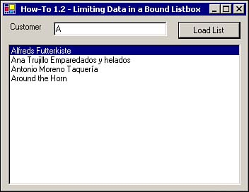

1.2 Limit the Data Displayed in a Bound List Box
Even populating a list box with a couple of columns from a table full of data can be a big performance hit. This How-To shows you how to create a parameterized SQL statement to limit the items that are displayed in the list box, thus giving you better performance on your forms.
You have hundreds of thousands of customers in your database, and you don't want the list box loaded up with the whole customer table. How can you limit the data that is displayed in your list box?
Technique
You are going to make a copy of the form that you created in How-To 1.1. You will then add a Label and TextBox control that the Select statement contained within the OleDbDataAdapter control will query against to limit the data displayed in the list box. A command button will be added to allow you to call the Fill method of the OleDbDataAdapter control whenever you update the text box, and then you can click the command button (see Figure 1.6).

Steps
To get started with this How-To, right-click the form you created in How-To 1.1, which should be listed in the Solutions Explorer. Choose Copy from the pop-up menu. Next, right-click the project in the Solution Explorer, and choose Paste from the pop-up menu. You will now have a new Class object in the Solutions Explorer called Copy Of whatever the previous name of the form was. Rename the new form that you have created to the name you desire. Then, with that form highlighted, click on the Code button above the Solutions Explorer. Change the first line of code to say this:
Public Class <Name of the new form>
You see, VS does not change the line of code automatically for you. It thinks you have a duplicate Class definition.
Now you can see that the icon of the form is correct. You can continue with the steps of the How-To.
Select the Data Adapter that you created. In the Properties pane, you will see the CommandText property when you click on the SelectCommand property plus sign. Replace the CommandText property with the following command:
SELECT CustomerID, CompanyName FROM Customers WHERE (CompanyName LIKE ? + '%')
You will learn more about the Select statement in Chapter 3. However, the WHERE clause used here compares CompanyName to a parameter that will be supplied, as indicated by the ?. This will be performed using code in the final step of this How-To. The % is a wildcard that tells the server to make it a fuzzy search.
Resize the ListBox control, and leave room at the top of the form for the Label, TextBox, and Command button. Create these three controls, setting the properties described in Table 1.3.
Table 1.3. Label, TextBox, and Command Button Control Property Settings
|
Label
|
Text
|
Customer
|
|
TextBox
|
Name
|
txtCustLimit
|
| |
Text
|
A
|
|
Command Button
|
Name
|
btnLoadList
|
| |
Text
|
Load List
|
Double-click the new command button you just created called btnLoadList. Enter the code in Listing 1.2 in the Click event of the btnLoadList button. This code loads the data entered from txtCustLimit into the parameter of the OleDBDataAdapter1, which was created by using the ? in the Select statement of the data adapter. Then Dataset1 is cleared of its data with the Clear method. Finally, DataSet1 is refilled with data based off the value in txtCustLimit, using the data adapter.
Listing 1.2 frmHowTo1_2.vb: Submitting a Parameter to a DataAdapter and Filling the Dataset
Private Sub btnLoadList_Click(ByVal sender As System.Object, _
ByVal e As System.EventArgs) Handles btnLoadList.Click
Me.OleDbDataAdapter1.SelectCommand.Parameters(0).Value = _
Me.txtCustLimit.Text
Me.DataSet1.Clear()
Me.OleDbDataAdapter1.Fill(Me.DataSet1)
End Sub
Note
 |
There is one big difference here between an OleDbDataAdapter and a SqlDataAdapter. Whereas the OleDbDataAdapter takes a ? to specify a parameter within the Select statement, the SqlDataAdapter requires a named parameter such as @parCustLimit. Therefore, instead of the select statement in step 1 being this:
SELECT CustomerID, CompanyName FROM Customers WHERE (CompanyName LIKE ? + '%')
It would be this:
SELECT CustomerID, CompanyName FROM Customers WHERE (CompanyName LIKE @parCustLimit + '%')
The naming of the actual parameter is up to you.
|
Highlight and delete the Load event for the form because you don't want to just fill the event when the form loads. You want the user to click btnLoadList.
How It Works
When the form you created for this How-To loads, or when you're using the form called frmHowTo1_2, you will see a blank ListBox control with a text box on top with the letter A in it. If you click the command button called btnLoadList, the list box becomes filled with values based on the letter (or letters) in txtCustLimit and on the code described in step 3.
Comments
Try entering a few other letters, and then try entering no letters. What happens? You limit the list more by the number of letters you enter, and you get all entries when you don't enter any letters.
The method displayed here, although simple, is powerful, and it can be used in a variety of ways.
You can continue building on this form for the next few How-Tos. If you want to copy your form and start a new one as described at the beginning of the steps for this one, you have the instructions there. Otherwise, by the time you reach How-To 1.8, you will have a data entry form that you can use. Each step, however, is available in the sample solution for this chapter.